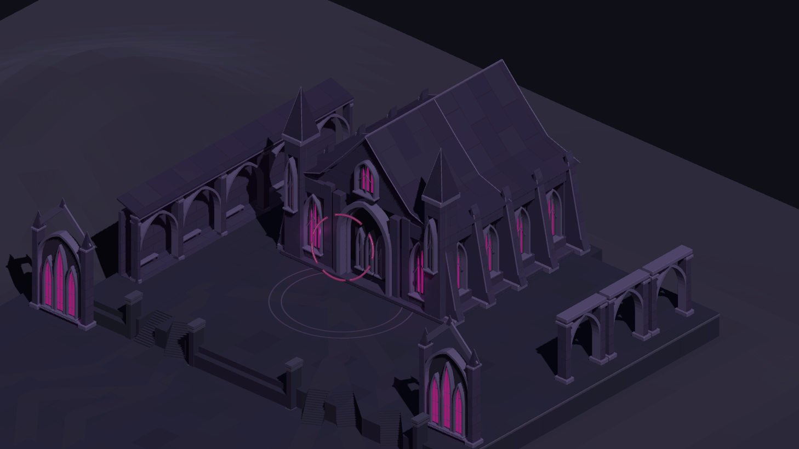
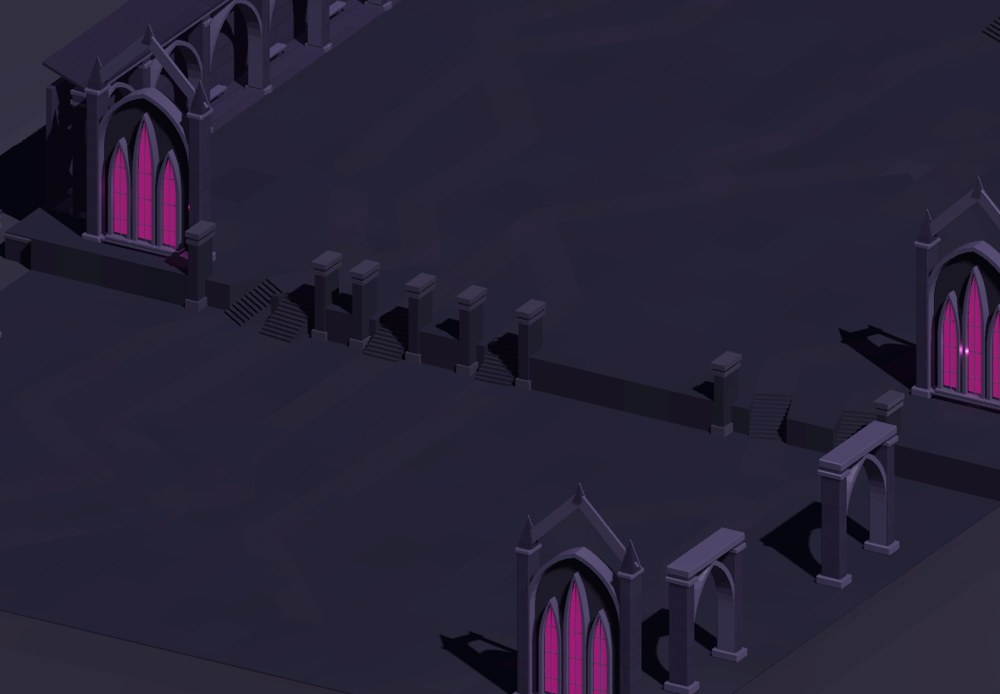

Glassvow · Act III · Step 3 study
The Obsidian Court
An intact royal precinct in obsidian and amethyst. The journey rises into the cloisters, descends into the audience court and climbs again towards the sovereign hall.
Native Godot captures · Chapter approval pending

The hall and its surrounding arcades form the final precinct. Tap the image to inspect the original capture.
Follow the journey
One continuous generated route from an entrance to the sovereign forecourt. This is a recorded native preview, not an interactive game or a survey of every branch.
Art direction and construction
 Approved direction: intact architecture, quiet stone and concentrated magenta glazing.
Approved direction: intact architecture, quiet stone and concentrated magenta glazing.
Native construction: distinct court levels, open-air stairs and shared stone surfaces.Study scope and evidence
These are desktop Godot captures at three reference proportions. They do not establish physical touch behaviour or mobile-device performance. The verification record distinguishes sampled full-width support, covered-passage headroom, node selection, sampled camera visibility and continuous travel.
Native capture and verification record · Continuous tour log
Act I and Act II retain their approvals. Act III owner review and the later Act IV Step 3 review precede Step 4.
Previous published study